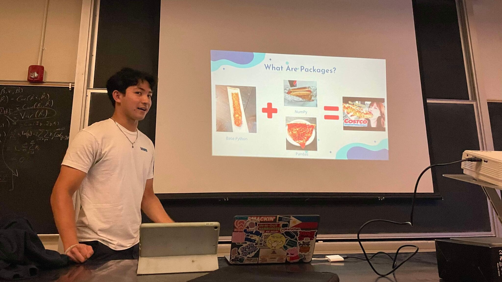
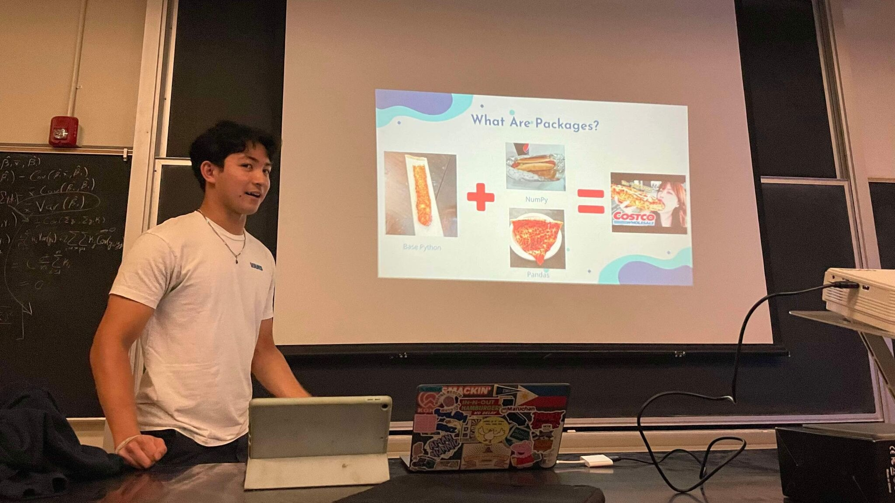

Experiences
Data Analytics Intern @ Daily Nexus
Daily Nexus is the official university newspaper for UC Santa Barbara. As a Data Analytics Intern, I am responsible for collecting, cleaning and reporting data. Specifically, my goal is to tell stories from messy data which are relevant to my surrounding community.
Recently, I have completed my first piece at the Daily Nexus, which was an analysis on the relationship between Rate My Professors ratings and student GPAs at UC Santa Barbara. To interact with my dashboard, click the button below!

President @ UCSB Data Science Collaborative
The UCSB Data Science Collaborative aims to make the field of data science accessible to new students and non-majors. During my time as President, I have mentored over 150 members and organized engaging networking events. I have also taught workshops in topics such as data visualization, cleaning and machine learning, equipped with engaging presentation slides, and practice worksheets using sample datasets.
Being able to support new and ambitious students has been an extremely fulfilling experience. Additionally, I have learned so much from by breaking complex concepts into digestible pieces for members. This experience is one that has both reinforced my technical expertise and enhanced my interpersonal skills. Our website can be found below where you can find club photos along with my workshop presentations and worksheets!
 

Incoming Research Analytics Asisstant @ META Lab
I am excited to announce that this Spring, I will be joining META Lab as a Research Analytics Assistant! Here, I will be utilizing my technical skills in data science to uncover meaningful insights in the field of positive psychology. The lab’s website can be found below.